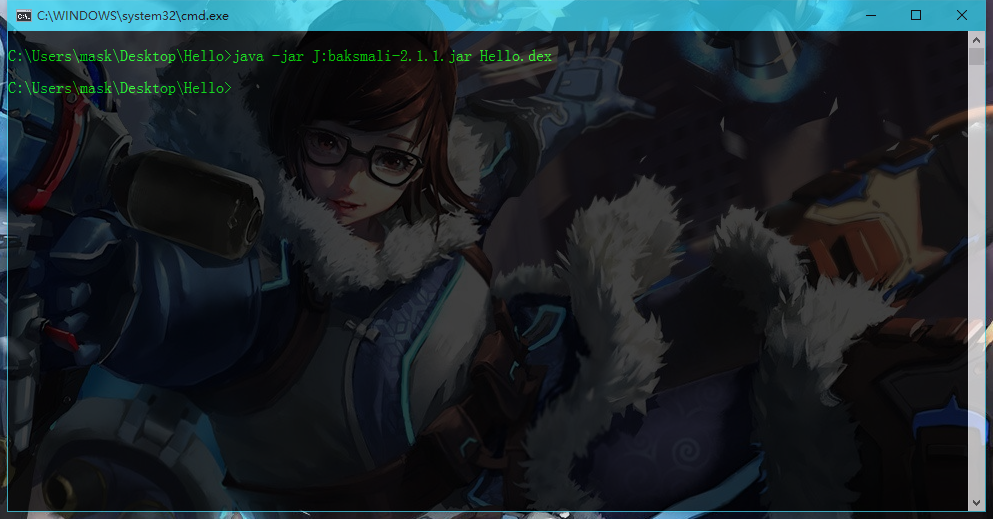

然后执行dx –dex --output=Hello.dex Hello.class 生成.dex文件
然后执行dx –dex --output=Hello.dex Hello.class 生成.dex文件Dalvik学习的总结
1.1Davlik虚拟机
和Java虚拟机类似，但也有自己的特点，一般的java程序经过编译将生成的java字节码保存在一个.class类型文件里，然后java虚拟机 通过解析.class文件来运行程序。
Dalvik虚拟机则是运行的是Dalvik字节码，Dalvik字 的可执行文件里，然后Dalvik虚拟机解析这个.dex文件再运行程序 Dalvik虚拟机是基于寄存器的，而Java虚拟机是基于栈的，程序运行时需要多次从栈读取和写入，而Dalvik虚拟机是通过访问寄存器传递数据，这样就比栈快
新建一个文件Hello.java
public class Hello{
public static void main(String[] args){
System.out.println("Hello,Android!!\n");
}
}
执行javac编译后再java运行（我这里用的是jdk1.6,jdk1.8后面生成dex文件好像会出问题)
然后执行dx –dex --output=Hello.dex Hello.class 生成.dex文件
接下来使用baksmali将.dex文件进行反汇编生成.smali文件，smali文件就是Davlik虚拟机的字节码
 会在目录下生成一个out文件夹，里面有个.smali文件,用编辑器打开.smali文件

这里.class 声明的是这个类，
.super是父类，
.source是源文件，就是由那个文件反汇编生成的，
#direct methods表示这是一个直接方法,一般用于静态方法
.method public constructor <init>()V 表示的是一个初始化的构造函数
V 表示返回值是void
.registers 1表示该函数使用到的寄存器的数量
还有一种表示寄存器数量的方法.locals,
.locals 2代表有两个局部寄存器，局部寄存器可以理解为在当前作用域中使用的变量。
.prologue 表示函数代码起始处
.line 1表示在源文件的行数
invoke-direct {p0},Ljava/lang/Object; -><init>()V 表示调用这个构造方法
p0代表的是这个方法的第一个参数，因为这是一个非静态方法，所以这里指的是this。
而静态方法是不存在this一说的，所以静态方法的p0指的是第一个函数传入的参数，只有非静态方法的p0才指的是this
invoke-direct 没有被覆盖方法的调用，即不用动态根据实例所引用的调用，编译时，静态确认的，一般是private或<init>方法；
简单概括就是不具备多态性的方法
return-void 表示返回void
.end method 表示方法结束
.method public static main([Ljava/lang/String;)V
.registers 3
.prologue
.line 5
sget-object v0, Ljava/lang/System;->out:Ljava/io/PrintStream;表示将System类型的变量保存到 v0
Ljava/lang/System;->out:Ljava/io/PrintStream 这里L可以表示Java类型中的任何类型，Ljava/lang/System表示
java.lang.System
此处的Ljava/lang/System;-理解为一个类型
out为调用的方法 Ljava/io/PrintStream表示该方法返回的类型
那么，总结一下，这里声明了一个System类型的变量v0，v0调用了一个out方法，这个out方法返回的是一个PrintSystem类型的值
const-string v1,"Hello,Android!!\n" 表示声明一个字符串v1为"Hello,Android!!\n"
invoke-virtual {v0,v1},Ljava/io/PrintStream;->println(Ljava/lang/String;)V 表示调用一个虚方法
invoke-virtual 虚方法调用，调用的方法运行时确认实际调用，和实例引用的实际对象有关，动态确认的，一般是带有修饰符
protected或public的方法；呐，这个就是具有多态性的方法
这里的v0,v1指的都是局部变量寄存器，这里表示调用PrintStream类型对象的println方法
.line 6
return-void
.end method
到这里，这个smali文件算是分析完了，还有几个需要补充的
V--void
Z--boolean
B--byte
S--short
C--char
I--int
J--long
F--float
D--double
L--Java任何类类型
[--array [表示一维数组int[]，[[表示二维数组int[][]
invoke-static 是类静态方法的调用，编译时，静态确定的；
invoke-virtual 虚方法调用，调用的方法运行时确认实际调用，和实例引用的实际对象有关，动态确认的，一般是带有修饰符
protected或public的方法；
invoke-direct 没有被覆盖方法的调用，即不用动态根据实例所引用的调用，编译时，静态确认的，一般是private或<init>方法；
invoke-super 直接调用父类的虚方法，编译时，静态确认的。
invokeinterface 调用接口方法，调用的方法运行时确认实际调用，即会在运行时才确定一个实现此接口的对象。
Davlik虚拟机的寄存器是32位的，那么long和double（分别是J和D）类型是64位值，它们需要两个寄存器来表示
.locals： 假如一个方法中有3个参数，2个局部变量，那么总共需要5个寄存器来储存 那么，前面说过.locals用来表示有几个局部变量，那么这里用.locals表示的话则是.locals2。 呐，如果用.registers来表示呢？因为.registers代表总共使用了几个寄存器，包括参数和局部变量，那么这里则用.registers5来表示。
baksmali默认反汇编后使用p寄存器表示函数的参数，v寄存器表示函数的局部变量 但是v寄存器其实也是可以表示函数的参数的
这里将两种寄存器命名方法做比较
V P 含义
v0 v0 第一个局部变量
v1 v1 第二个局部变量
... ... ...
vM-N p0 第一个参数寄存器
... ... ...
vM-1 pN-1 第N个参数寄存器
因为默认使用p寄存器表示函数参数时，方便修改，添加和删除寄存器的数量，当然你也可以使用全部都用 v寄存器，只需要使用
"baksmali -p/--no-parameter-registers"即可

见《Android软件安全与逆向分析》第三章以及第五章(这一章会详细介绍smali的一些语法结构） 最后，在Android环境中测试运行下.dex文件

运行成功，然后接下来就是分析这个.dex文件